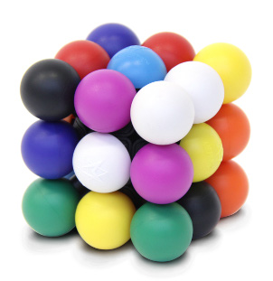

Cómo resolver molecube en prolog

Hace un par de años que los Reyes Magos nos dejaron en casa un molecube. Consiste en un cubo parecido al cubo de Rubick, pero el objetivo no es conseguir caras de igual color. En cambio, no debe haber dos colores iguales en ninguna cara. Como anuncian en su página web, es como un sudoku tridimensional.
En principio no parecía un rompecabezas muy difícil, porque ya teníamos experiencia con los cubos de Rubick. Pero en la práctica nos encontramos incapaces de encontrar una solución. Aprovechando que aún no había programado nada en prolog, decidí intentar resolver el puzzle en este lenguaje.
Objetivo del solucionador
El solucionador solo encontrará el estado final del molecube. Tras esto, un humano deberá llevar el estado real del molecube al estado propuesto por el solucionador.
Esto no es un gran problema, ya que tenemos experiencia con cubos de Rubick.
Definición del problema
Para solucionar el molecube se necesita que:
- Cada cubito sea de uno de los 9 colores posibles: blanco, azul, rosa, morado, amarillo, negro, rojo, naranja y verde.
- Los centros de las caras son inmóviles, así que deben ser del color del molecube real.
- Cada cara debe tener todos sus colores distintos.
- Cada color móvil debe aparecer las mismas veces que el molecube, en el mismo sitio. Por ejemplo el color blanco debe aparecer en 1 vez en las esquinas y 1 vez en las aristas (entre dos esquinas)
Todo esto suena bastante a programación por restricciones, y puede programarse de forma bastante natural en prolog.
Implementación en prolog
Estructura básica
Un color se representa por un número del 0 al 8
color(C) :- C in 0..8.
Las coordenadas tridimensionales de una celda van del 0 al 2
coordenada(X) :- X in 0..2 . coordenadas([X,Y,Z]) :- aplica_a_todos(coordenada,[X,Y,Z]).
Finalmente, una celda tiene unas coordenadas y un color.
celda([XYZ,C]) :- color(C), coordenadas(XYZ).
El molecube se construye con 26 de estas celdas. El siguiente código genera una secuencia de 0 a 26, quita el número 13, y construye las 26 celdas del cubo.
coordenadas_desde_orden(ORDEN,[X,Y,Z]) :- ORDEN < 27, X is ORDEN//9, Y is (ORDEN-X*9)//3, Z is ORDEN mod 3. cubo(L) :- secuencia(0,26,SEQ), filtra_lista(dif(13), SEQ, SEQSINCENTRO), mapea_lista(coordenadas_desde_orden,SEQSINCENTRO,COORS), mapea_lista(coordenadas_de_celda,L,COORS), aplica_a_todos(celda,L).
Tras esto, hay que aplicar las restricciones adecuadas a caras, aristas y esquinas. Por ejemplo para conseguir que en cada cara todos los colores sean distintos:
coordenadas_de_celdaZ(Z,C) :- coordenadas_de_celda(C,[_,_,Z]). caraXY(CUBO,Z,CARA) :- filtra_lista(coordenadas_de_celdaZ(Z),CUBO,CARA). [...] Similar para la cara XZ y la cara YZ % En una cara, todos los colores deben ser distintos colores_de_celdas_distintos(CELDAS) :- colores_de_celdas(CELDAS,COLORES), todos_distintos(COLORES). restricciones_caras_de_cubo(CUBO) :- caraXY(CUBO,0,CARAXY0), colores_de_celdas_distintos(CARAXY0), caraXY(CUBO,2,CARAXY2), colores_de_celdas_distintos(CARAXY2), caraXZ(CUBO,0,CARAXZ0), colores_de_celdas_distintos(CARAXZ0), caraXZ(CUBO,2,CARAXZ2), colores_de_celdas_distintos(CARAXZ2), caraYZ(CUBO,0,CARAYZ0), colores_de_celdas_distintos(CARAYZ0), caraYZ(CUBO,2,CARAYZ2), colores_de_celdas_distintos(CARAYZ2).
Datos del molecube real
Las restricciones sobre aristas y esquinas son un poco más laboriosas. Examinando el molecube podemos contar cuántos cubitos de cada tipo y color hay:
| Color | Vértices | Aristas | Índice en el programa |
|---|---|---|---|
| blanco | 1 | 1 | 0 |
| azul | 1 | 1 | 1 |
| rosa | 0 | 3 | 2 |
| azul oscuro | 1 | 1 | 3 |
| amarillo | 1 | 1 | 4 |
| negro | 1 | 1 | 5 |
| rojo | 0 | 3 | 6 |
| naranja | 1 | 1 | 7 |
| verde | 2 | 2 | 8 |
Tras esto, podemos fijar límites sobre las aristas y las esquinas:
% Extractor de esquinas de un cubo. Una esquina no tiene ninguna coordenada a 1 es_esquina(CELDA) :- coordenadas_de_celda(CELDA,[X,Y,Z]), contar([X,Y,Z],1,0). esquinas(CUBO,ESQUINAS) :- filtra_lista(es_esquina,CUBO,ESQUINAS). % Extractor de aristas. Una arista tiene una coordenada a 1. es_arista(CELDA) :- coordenadas_de_celda(CELDA,[X,Y,Z]), contar([X,Y,Z],1,1). aristas(CUBO,ARISTAS) :- filtra_lista(es_arista,CUBO,ARISTAS). limita_esquinas_y_aristas(CUBO,COLOR,E,A) :- aristas(CUBO,ARISTAS), colores_de_celdas(ARISTAS,CA), contar(CA,COLOR,A), esquinas(CUBO,ESQUINAS), colores_de_celdas(ESQUINAS,CE), contar(CE,COLOR,E). restricciones_esquinas_aristas(CUBO) :- limita_esquinas_y_aristas(CUBO,0,1,1), limita_esquinas_y_aristas(CUBO,1,1,1), limita_esquinas_y_aristas(CUBO,2,0,3), limita_esquinas_y_aristas(CUBO,3,1,1), limita_esquinas_y_aristas(CUBO,4,1,1), limita_esquinas_y_aristas(CUBO,5,1,1), limita_esquinas_y_aristas(CUBO,6,0,3), limita_esquinas_y_aristas(CUBO,7,1,1), limita_esquinas_y_aristas(CUBO,8,2,0).
Y también podemos apuntar los colores centrales de las caras (que no se mueven):
| x=0, y=1 | x=1 | x=2,y=1 | |
|---|---|---|---|
| azul | z=2, y=1 | ||
| amarillo | negro | naranja | z=1 |
| azul oscuro | z=0, y=1 | ||
| blanco | z=1, y=2 |
restriciones_colores_centrales_de_caras(CUBO) :- % Los centros de las caras tienen dos coordenadas a 1 color_en_coordenadas(CUBO,[0,1,1], 4), color_en_coordenadas(CUBO,[1,1,2], 1), color_en_coordenadas(CUBO,[1,0,1], 5), color_en_coordenadas(CUBO,[1,1,0], 3), color_en_coordenadas(CUBO,[1,2,1], 0), color_en_coordenadas(CUBO,[2,1,1], 7).
Por tanto, ya tenemos la construcción de un molecube completo, con todas sus restricciones
cubo_con_restricciones(CUBO) :- cubo(CUBO), restricciones_caras_de_cubo(CUBO), restriciones_colores_centrales_de_caras(CUBO), restricciones_esquinas_aristas(CUBO).
Salida de la solución
Para visualizar un cubo, he optado por utilizar x3dom, que me permite visualizar directamente un modelo en tres dimensiones en páginas web.
color_a_nombre(0, white). color_a_nombre(1, blue). color_a_nombre(2, mediumvioletred ). %pink color_a_nombre(3, navy). %darkblue color_a_nombre(4, yellow). color_a_nombre(5, black). color_a_nombre(6, red). color_a_nombre(7, orangered). color_a_nombre(8, green). imprime_celda_x3d(CELDA) :- [[X,Y,Z],C] = CELDA, color_a_nombre(C,N), format(" <transform translation='~d ~d ~d'> <shape> <appearance> <material diffuseColor='~a'> </material> </appearance> <sphere></sphere> </shape> </transform> ", [(X-1)*2,(Y-1)*2,(Z-1)*2,N]). imprime_solucion_x3d(CUBO) :- write(" <x3d height='500px' style='border:none; display:block; width:100%'> <scene> "), aplica_a_todos(imprime_celda,CUBO), write(" </scene> </x3d> ").
Finalmente, el cálculo de todas las soluciones se ejecuta con este código:
findall(CUBO, cubo_con_restricciones(CUBO),SOLUCIONES), aplica_a_todos(imprime_solucion_x3d,SOLUCIONES), aplica_a_todos(imprime_solucion,SOLUCIONES), length(SOLUCIONES,X), format("Número de soluciones:~d",X).
Soluciones
El programa encuentra 80 soluciones distintas. A continuación se muestra una de ellas (un dedo para mover, dos para hacer zoom):
Invariantes de un cubo de Rubick
Es sabido que en un cubo de Rubick no pueden conseguirse todas las configuraciones que en principio parecen posibles, ya que es necesario que la permutación de sus aristas y esquinas debe ser par.
Aunque no lo he comprobado, creo que todas las 80 soluciones halladas son posibles, ya que siempre se puede jugar con las piezas repetidas de un molecube: dos esquinas verdes, y tres aristas rojas. En mi caso, marqué una arista verde con un cordel, y si una solución era alcanzable con la esquina verde en la cara inferior, repetía la solución dejando la esquina marcada para la cara superior.
Lista completa de soluciones
Solucion: 0,0,0:white 0,0,1:red 0,0,2:orangered 0,1,0:black 0,1,1:yellow 0,1,2:mediumvioletred 0,2,0:blue 0,2,1:navy 0,2,2:green 1,0,0:mediumvioletred 1,0,1:black 1,0,2:yellow 1,1,0:navy 1,1,2:blue 1,2,0:orangered 1,2,1:white 1,2,2:red 2,0,0:green 2,0,1:blue 2,0,2:navy 2,1,0:red 2,1,1:orangered 2,1,2:white 2,2,0:yellow 2,2,1:mediumvioletred 2,2,2:black Solucion: 0,0,0:white 0,0,1:red 0,0,2:orangered 0,1,0:mediumvioletred 0,1,1:yellow 0,1,2:black 0,2,0:blue 0,2,1:navy 0,2,2:green 1,0,0:yellow 1,0,1:black 1,0,2:mediumvioletred 1,1,0:navy 1,1,2:blue 1,2,0:orangered 1,2,1:white 1,2,2:red 2,0,0:green 2,0,1:blue 2,0,2:navy 2,1,0:red 2,1,1:orangered 2,1,2:white 2,2,0:black 2,2,1:mediumvioletred 2,2,2:yellow Solucion: 0,0,0:white 0,0,1:mediumvioletred 0,0,2:orangered 0,1,0:black 0,1,1:yellow 0,1,2:red 0,2,0:blue 0,2,1:navy 0,2,2:green 1,0,0:red 1,0,1:black 1,0,2:yellow 1,1,0:navy 1,1,2:blue 1,2,0:orangered 1,2,1:white 1,2,2:mediumvioletred 2,0,0:green 2,0,1:blue 2,0,2:navy 2,1,0:mediumvioletred 2,1,1:orangered 2,1,2:white 2,2,0:yellow 2,2,1:red 2,2,2:black Solucion: 0,0,0:white 0,0,1:mediumvioletred 0,0,2:orangered 0,1,0:red 0,1,1:yellow 0,1,2:black 0,2,0:blue 0,2,1:navy 0,2,2:green 1,0,0:yellow 1,0,1:black 1,0,2:red 1,1,0:navy 1,1,2:blue 1,2,0:orangered 1,2,1:white 1,2,2:mediumvioletred 2,0,0:green 2,0,1:blue 2,0,2:navy 2,1,0:mediumvioletred 2,1,1:orangered 2,1,2:white 2,2,0:black 2,2,1:red 2,2,2:yellow Solucion: 0,0,0:white 0,0,1:red 0,0,2:navy 0,1,0:black 0,1,1:yellow 0,1,2:mediumvioletred 0,2,0:green 0,2,1:blue 0,2,2:orangered 1,0,0:orangered 1,0,1:black 1,0,2:yellow 1,1,0:navy 1,1,2:blue 1,2,0:mediumvioletred 1,2,1:white 1,2,2:red 2,0,0:blue 2,0,1:mediumvioletred 2,0,2:green 2,1,0:red 2,1,1:orangered 2,1,2:white 2,2,0:yellow 2,2,1:navy 2,2,2:black Solucion: 0,0,0:white 0,0,1:red 0,0,2:green 0,1,0:black 0,1,1:yellow 0,1,2:mediumvioletred 0,2,0:orangered 0,2,1:blue 0,2,2:navy 1,0,0:mediumvioletred 1,0,1:black 1,0,2:orangered 1,1,0:navy 1,1,2:blue 1,2,0:yellow 1,2,1:white 1,2,2:red 2,0,0:blue 2,0,1:navy 2,0,2:yellow 2,1,0:red 2,1,1:orangered 2,1,2:white 2,2,0:green 2,2,1:mediumvioletred 2,2,2:black Solucion: 0,0,0:white 0,0,1:red 0,0,2:orangered 0,1,0:black 0,1,1:yellow 0,1,2:mediumvioletred 0,2,0:green 0,2,1:blue 0,2,2:navy 1,0,0:mediumvioletred 1,0,1:black 1,0,2:yellow 1,1,0:navy 1,1,2:blue 1,2,0:orangered 1,2,1:white 1,2,2:red 2,0,0:blue 2,0,1:navy 2,0,2:green 2,1,0:red 2,1,1:orangered 2,1,2:white 2,2,0:yellow 2,2,1:mediumvioletred 2,2,2:black Solucion: 0,0,0:white 0,0,1:navy 0,0,2:green 0,1,0:red 0,1,1:yellow 0,1,2:mediumvioletred 0,2,0:orangered 0,2,1:blue 0,2,2:black 1,0,0:mediumvioletred 1,0,1:black 1,0,2:orangered 1,1,0:navy 1,1,2:blue 1,2,0:yellow 1,2,1:white 1,2,2:red 2,0,0:blue 2,0,1:red 2,0,2:yellow 2,1,0:black 2,1,1:orangered 2,1,2:white 2,2,0:green 2,2,1:mediumvioletred 2,2,2:navy Solucion: 0,0,0:white 0,0,1:navy 0,0,2:orangered 0,1,0:red 0,1,1:yellow 0,1,2:mediumvioletred 0,2,0:green 0,2,1:blue 0,2,2:black 1,0,0:mediumvioletred 1,0,1:black 1,0,2:yellow 1,1,0:navy 1,1,2:blue 1,2,0:orangered 1,2,1:white 1,2,2:red 2,0,0:blue 2,0,1:red 2,0,2:green 2,1,0:black 2,1,1:orangered 2,1,2:white 2,2,0:yellow 2,2,1:mediumvioletred 2,2,2:navy Solucion: 0,0,0:white 0,0,1:navy 0,0,2:green 0,1,0:mediumvioletred 0,1,1:yellow 0,1,2:red 0,2,0:orangered 0,2,1:blue 0,2,2:black 1,0,0:red 1,0,1:black 1,0,2:orangered 1,1,0:navy 1,1,2:blue 1,2,0:yellow 1,2,1:white 1,2,2:mediumvioletred 2,0,0:blue 2,0,1:mediumvioletred 2,0,2:yellow 2,1,0:black 2,1,1:orangered 2,1,2:white 2,2,0:green 2,2,1:red 2,2,2:navy Solucion: 0,0,0:white 0,0,1:navy 0,0,2:orangered 0,1,0:mediumvioletred 0,1,1:yellow 0,1,2:red 0,2,0:green 0,2,1:blue 0,2,2:black 1,0,0:red 1,0,1:black 1,0,2:yellow 1,1,0:navy 1,1,2:blue 1,2,0:orangered 1,2,1:white 1,2,2:mediumvioletred 2,0,0:blue 2,0,1:mediumvioletred 2,0,2:green 2,1,0:black 2,1,1:orangered 2,1,2:white 2,2,0:yellow 2,2,1:red 2,2,2:navy Solucion: 0,0,0:white 0,0,1:red 0,0,2:orangered 0,1,0:mediumvioletred 0,1,1:yellow 0,1,2:black 0,2,0:green 0,2,1:blue 0,2,2:navy 1,0,0:yellow 1,0,1:black 1,0,2:mediumvioletred 1,1,0:navy 1,1,2:blue 1,2,0:orangered 1,2,1:white 1,2,2:red 2,0,0:blue 2,0,1:navy 2,0,2:green 2,1,0:red 2,1,1:orangered 2,1,2:white 2,2,0:black 2,2,1:mediumvioletred 2,2,2:yellow Solucion: 0,0,0:white 0,0,1:mediumvioletred 0,0,2:navy 0,1,0:black 0,1,1:yellow 0,1,2:red 0,2,0:green 0,2,1:blue 0,2,2:orangered 1,0,0:orangered 1,0,1:black 1,0,2:yellow 1,1,0:navy 1,1,2:blue 1,2,0:red 1,2,1:white 1,2,2:mediumvioletred 2,0,0:blue 2,0,1:red 2,0,2:green 2,1,0:mediumvioletred 2,1,1:orangered 2,1,2:white 2,2,0:yellow 2,2,1:navy 2,2,2:black Solucion: 0,0,0:white 0,0,1:mediumvioletred 0,0,2:green 0,1,0:black 0,1,1:yellow 0,1,2:red 0,2,0:orangered 0,2,1:blue 0,2,2:navy 1,0,0:red 1,0,1:black 1,0,2:orangered 1,1,0:navy 1,1,2:blue 1,2,0:yellow 1,2,1:white 1,2,2:mediumvioletred 2,0,0:blue 2,0,1:navy 2,0,2:yellow 2,1,0:mediumvioletred 2,1,1:orangered 2,1,2:white 2,2,0:green 2,2,1:red 2,2,2:black Solucion: 0,0,0:white 0,0,1:mediumvioletred 0,0,2:orangered 0,1,0:black 0,1,1:yellow 0,1,2:red 0,2,0:green 0,2,1:blue 0,2,2:navy 1,0,0:red 1,0,1:black 1,0,2:yellow 1,1,0:navy 1,1,2:blue 1,2,0:orangered 1,2,1:white 1,2,2:mediumvioletred 2,0,0:blue 2,0,1:navy 2,0,2:green 2,1,0:mediumvioletred 2,1,1:orangered 2,1,2:white 2,2,0:yellow 2,2,1:red 2,2,2:black Solucion: 0,0,0:white 0,0,1:mediumvioletred 0,0,2:orangered 0,1,0:red 0,1,1:yellow 0,1,2:black 0,2,0:green 0,2,1:blue 0,2,2:navy 1,0,0:yellow 1,0,1:black 1,0,2:red 1,1,0:navy 1,1,2:blue 1,2,0:orangered 1,2,1:white 1,2,2:mediumvioletred 2,0,0:blue 2,0,1:navy 2,0,2:green 2,1,0:mediumvioletred 2,1,1:orangered 2,1,2:white 2,2,0:black 2,2,1:red 2,2,2:yellow Solucion: 0,0,0:white 0,0,1:blue 0,0,2:navy 0,1,0:black 0,1,1:yellow 0,1,2:red 0,2,0:green 0,2,1:mediumvioletred 0,2,2:orangered 1,0,0:orangered 1,0,1:black 1,0,2:mediumvioletred 1,1,0:navy 1,1,2:blue 1,2,0:red 1,2,1:white 1,2,2:yellow 2,0,0:yellow 2,0,1:red 2,0,2:green 2,1,0:mediumvioletred 2,1,1:orangered 2,1,2:white 2,2,0:blue 2,2,1:navy 2,2,2:black Solucion: 0,0,0:white 0,0,1:blue 0,0,2:orangered 0,1,0:black 0,1,1:yellow 0,1,2:red 0,2,0:green 0,2,1:mediumvioletred 0,2,2:navy 1,0,0:red 1,0,1:black 1,0,2:mediumvioletred 1,1,0:navy 1,1,2:blue 1,2,0:orangered 1,2,1:white 1,2,2:yellow 2,0,0:yellow 2,0,1:navy 2,0,2:green 2,1,0:mediumvioletred 2,1,1:orangered 2,1,2:white 2,2,0:blue 2,2,1:red 2,2,2:black Solucion: 0,0,0:white 0,0,1:blue 0,0,2:navy 0,1,0:black 0,1,1:yellow 0,1,2:mediumvioletred 0,2,0:green 0,2,1:red 0,2,2:orangered 1,0,0:orangered 1,0,1:black 1,0,2:red 1,1,0:navy 1,1,2:blue 1,2,0:mediumvioletred 1,2,1:white 1,2,2:yellow 2,0,0:yellow 2,0,1:mediumvioletred 2,0,2:green 2,1,0:red 2,1,1:orangered 2,1,2:white 2,2,0:blue 2,2,1:navy 2,2,2:black Solucion: 0,0,0:white 0,0,1:blue 0,0,2:orangered 0,1,0:black 0,1,1:yellow 0,1,2:mediumvioletred 0,2,0:green 0,2,1:red 0,2,2:navy 1,0,0:mediumvioletred 1,0,1:black 1,0,2:red 1,1,0:navy 1,1,2:blue 1,2,0:orangered 1,2,1:white 1,2,2:yellow 2,0,0:yellow 2,0,1:navy 2,0,2:green 2,1,0:red 2,1,1:orangered 2,1,2:white 2,2,0:blue 2,2,1:mediumvioletred 2,2,2:black Solucion: 0,0,0:blue 0,0,1:navy 0,0,2:white 0,1,0:red 0,1,1:yellow 0,1,2:black 0,2,0:orangered 0,2,1:mediumvioletred 0,2,2:green 1,0,0:mediumvioletred 1,0,1:black 1,0,2:orangered 1,1,0:navy 1,1,2:blue 1,2,0:yellow 1,2,1:white 1,2,2:red 2,0,0:green 2,0,1:red 2,0,2:yellow 2,1,0:white 2,1,1:orangered 2,1,2:mediumvioletred 2,2,0:black 2,2,1:blue 2,2,2:navy Solucion: 0,0,0:blue 0,0,1:red 0,0,2:white 0,1,0:mediumvioletred 0,1,1:yellow 0,1,2:black 0,2,0:orangered 0,2,1:navy 0,2,2:green 1,0,0:yellow 1,0,1:black 1,0,2:orangered 1,1,0:navy 1,1,2:blue 1,2,0:red 1,2,1:white 1,2,2:mediumvioletred 2,0,0:green 2,0,1:mediumvioletred 2,0,2:navy 2,1,0:white 2,1,1:orangered 2,1,2:red 2,2,0:black 2,2,1:blue 2,2,2:yellow Solucion: 0,0,0:blue 0,0,1:navy 0,0,2:white 0,1,0:mediumvioletred 0,1,1:yellow 0,1,2:black 0,2,0:orangered 0,2,1:red 0,2,2:green 1,0,0:red 1,0,1:black 1,0,2:orangered 1,1,0:navy 1,1,2:blue 1,2,0:yellow 1,2,1:white 1,2,2:mediumvioletred 2,0,0:green 2,0,1:mediumvioletred 2,0,2:yellow 2,1,0:white 2,1,1:orangered 2,1,2:red 2,2,0:black 2,2,1:blue 2,2,2:navy Solucion: 0,0,0:blue 0,0,1:mediumvioletred 0,0,2:white 0,1,0:red 0,1,1:yellow 0,1,2:black 0,2,0:orangered 0,2,1:navy 0,2,2:green 1,0,0:yellow 1,0,1:black 1,0,2:orangered 1,1,0:navy 1,1,2:blue 1,2,0:mediumvioletred 1,2,1:white 1,2,2:red 2,0,0:green 2,0,1:red 2,0,2:navy 2,1,0:white 2,1,1:orangered 2,1,2:mediumvioletred 2,2,0:black 2,2,1:blue 2,2,2:yellow Solucion: 0,0,0:orangered 0,0,1:navy 0,0,2:white 0,1,0:red 0,1,1:yellow 0,1,2:black 0,2,0:blue 0,2,1:mediumvioletred 0,2,2:green 1,0,0:mediumvioletred 1,0,1:black 1,0,2:red 1,1,0:navy 1,1,2:blue 1,2,0:yellow 1,2,1:white 1,2,2:orangered 2,0,0:green 2,0,1:blue 2,0,2:yellow 2,1,0:white 2,1,1:orangered 2,1,2:mediumvioletred 2,2,0:black 2,2,1:red 2,2,2:navy Solucion: 0,0,0:orangered 0,0,1:red 0,0,2:white 0,1,0:black 0,1,1:yellow 0,1,2:mediumvioletred 0,2,0:blue 0,2,1:navy 0,2,2:green 1,0,0:mediumvioletred 1,0,1:black 1,0,2:yellow 1,1,0:navy 1,1,2:blue 1,2,0:red 1,2,1:white 1,2,2:orangered 2,0,0:green 2,0,1:blue 2,0,2:navy 2,1,0:white 2,1,1:orangered 2,1,2:red 2,2,0:yellow 2,2,1:mediumvioletred 2,2,2:black Solucion: 0,0,0:green 0,0,1:red 0,0,2:white 0,1,0:mediumvioletred 0,1,1:yellow 0,1,2:black 0,2,0:blue 0,2,1:navy 0,2,2:orangered 1,0,0:orangered 1,0,1:black 1,0,2:mediumvioletred 1,1,0:navy 1,1,2:blue 1,2,0:red 1,2,1:white 1,2,2:yellow 2,0,0:yellow 2,0,1:blue 2,0,2:navy 2,1,0:white 2,1,1:orangered 2,1,2:red 2,2,0:black 2,2,1:mediumvioletred 2,2,2:green Solucion: 0,0,0:orangered 0,0,1:red 0,0,2:white 0,1,0:mediumvioletred 0,1,1:yellow 0,1,2:black 0,2,0:blue 0,2,1:navy 0,2,2:green 1,0,0:yellow 1,0,1:black 1,0,2:mediumvioletred 1,1,0:navy 1,1,2:blue 1,2,0:red 1,2,1:white 1,2,2:orangered 2,0,0:green 2,0,1:blue 2,0,2:navy 2,1,0:white 2,1,1:orangered 2,1,2:red 2,2,0:black 2,2,1:mediumvioletred 2,2,2:yellow Solucion: 0,0,0:orangered 0,0,1:navy 0,0,2:white 0,1,0:mediumvioletred 0,1,1:yellow 0,1,2:black 0,2,0:blue 0,2,1:red 0,2,2:green 1,0,0:red 1,0,1:black 1,0,2:mediumvioletred 1,1,0:navy 1,1,2:blue 1,2,0:yellow 1,2,1:white 1,2,2:orangered 2,0,0:green 2,0,1:blue 2,0,2:yellow 2,1,0:white 2,1,1:orangered 2,1,2:red 2,2,0:black 2,2,1:mediumvioletred 2,2,2:navy Solucion: 0,0,0:green 0,0,1:mediumvioletred 0,0,2:white 0,1,0:red 0,1,1:yellow 0,1,2:black 0,2,0:blue 0,2,1:navy 0,2,2:orangered 1,0,0:orangered 1,0,1:black 1,0,2:red 1,1,0:navy 1,1,2:blue 1,2,0:mediumvioletred 1,2,1:white 1,2,2:yellow 2,0,0:yellow 2,0,1:blue 2,0,2:navy 2,1,0:white 2,1,1:orangered 2,1,2:mediumvioletred 2,2,0:black 2,2,1:red 2,2,2:green Solucion: 0,0,0:orangered 0,0,1:mediumvioletred 0,0,2:white 0,1,0:black 0,1,1:yellow 0,1,2:red 0,2,0:blue 0,2,1:navy 0,2,2:green 1,0,0:red 1,0,1:black 1,0,2:yellow 1,1,0:navy 1,1,2:blue 1,2,0:mediumvioletred 1,2,1:white 1,2,2:orangered 2,0,0:green 2,0,1:blue 2,0,2:navy 2,1,0:white 2,1,1:orangered 2,1,2:mediumvioletred 2,2,0:yellow 2,2,1:red 2,2,2:black Solucion: 0,0,0:orangered 0,0,1:mediumvioletred 0,0,2:white 0,1,0:red 0,1,1:yellow 0,1,2:black 0,2,0:blue 0,2,1:navy 0,2,2:green 1,0,0:yellow 1,0,1:black 1,0,2:red 1,1,0:navy 1,1,2:blue 1,2,0:mediumvioletred 1,2,1:white 1,2,2:orangered 2,0,0:green 2,0,1:blue 2,0,2:navy 2,1,0:white 2,1,1:orangered 2,1,2:mediumvioletred 2,2,0:black 2,2,1:red 2,2,2:yellow Solucion: 0,0,0:orangered 0,0,1:red 0,0,2:white 0,1,0:black 0,1,1:yellow 0,1,2:mediumvioletred 0,2,0:green 0,2,1:blue 0,2,2:navy 1,0,0:mediumvioletred 1,0,1:black 1,0,2:yellow 1,1,0:navy 1,1,2:blue 1,2,0:red 1,2,1:white 1,2,2:orangered 2,0,0:blue 2,0,1:navy 2,0,2:green 2,1,0:white 2,1,1:orangered 2,1,2:red 2,2,0:yellow 2,2,1:mediumvioletred 2,2,2:black Solucion: 0,0,0:orangered 0,0,1:red 0,0,2:white 0,1,0:mediumvioletred 0,1,1:yellow 0,1,2:black 0,2,0:green 0,2,1:blue 0,2,2:navy 1,0,0:yellow 1,0,1:black 1,0,2:mediumvioletred 1,1,0:navy 1,1,2:blue 1,2,0:red 1,2,1:white 1,2,2:orangered 2,0,0:blue 2,0,1:navy 2,0,2:green 2,1,0:white 2,1,1:orangered 2,1,2:red 2,2,0:black 2,2,1:mediumvioletred 2,2,2:yellow Solucion: 0,0,0:orangered 0,0,1:mediumvioletred 0,0,2:white 0,1,0:black 0,1,1:yellow 0,1,2:red 0,2,0:green 0,2,1:blue 0,2,2:navy 1,0,0:red 1,0,1:black 1,0,2:yellow 1,1,0:navy 1,1,2:blue 1,2,0:mediumvioletred 1,2,1:white 1,2,2:orangered 2,0,0:blue 2,0,1:navy 2,0,2:green 2,1,0:white 2,1,1:orangered 2,1,2:mediumvioletred 2,2,0:yellow 2,2,1:red 2,2,2:black Solucion: 0,0,0:orangered 0,0,1:mediumvioletred 0,0,2:white 0,1,0:red 0,1,1:yellow 0,1,2:black 0,2,0:green 0,2,1:blue 0,2,2:navy 1,0,0:yellow 1,0,1:black 1,0,2:red 1,1,0:navy 1,1,2:blue 1,2,0:mediumvioletred 1,2,1:white 1,2,2:orangered 2,0,0:blue 2,0,1:navy 2,0,2:green 2,1,0:white 2,1,1:orangered 2,1,2:mediumvioletred 2,2,0:black 2,2,1:red 2,2,2:yellow Solucion: 0,0,0:green 0,0,1:blue 0,0,2:white 0,1,0:red 0,1,1:yellow 0,1,2:mediumvioletred 0,2,0:black 0,2,1:navy 0,2,2:orangered 1,0,0:orangered 1,0,1:black 1,0,2:red 1,1,0:navy 1,1,2:blue 1,2,0:mediumvioletred 1,2,1:white 1,2,2:yellow 2,0,0:yellow 2,0,1:mediumvioletred 2,0,2:navy 2,1,0:white 2,1,1:orangered 2,1,2:black 2,2,0:blue 2,2,1:red 2,2,2:green Solucion: 0,0,0:orangered 0,0,1:blue 0,0,2:white 0,1,0:red 0,1,1:yellow 0,1,2:mediumvioletred 0,2,0:black 0,2,1:navy 0,2,2:green 1,0,0:yellow 1,0,1:black 1,0,2:red 1,1,0:navy 1,1,2:blue 1,2,0:mediumvioletred 1,2,1:white 1,2,2:orangered 2,0,0:green 2,0,1:mediumvioletred 2,0,2:navy 2,1,0:white 2,1,1:orangered 2,1,2:black 2,2,0:blue 2,2,1:red 2,2,2:yellow Solucion: 0,0,0:green 0,0,1:blue 0,0,2:white 0,1,0:mediumvioletred 0,1,1:yellow 0,1,2:red 0,2,0:black 0,2,1:navy 0,2,2:orangered 1,0,0:orangered 1,0,1:black 1,0,2:mediumvioletred 1,1,0:navy 1,1,2:blue 1,2,0:red 1,2,1:white 1,2,2:yellow 2,0,0:yellow 2,0,1:red 2,0,2:navy 2,1,0:white 2,1,1:orangered 2,1,2:black 2,2,0:blue 2,2,1:mediumvioletred 2,2,2:green Solucion: 0,0,0:orangered 0,0,1:blue 0,0,2:white 0,1,0:mediumvioletred 0,1,1:yellow 0,1,2:red 0,2,0:black 0,2,1:navy 0,2,2:green 1,0,0:yellow 1,0,1:black 1,0,2:mediumvioletred 1,1,0:navy 1,1,2:blue 1,2,0:red 1,2,1:white 1,2,2:orangered 2,0,0:green 2,0,1:red 2,0,2:navy 2,1,0:white 2,1,1:orangered 2,1,2:black 2,2,0:blue 2,2,1:mediumvioletred 2,2,2:yellow Solucion: 0,0,0:blue 0,0,1:navy 0,0,2:green 0,1,0:red 0,1,1:yellow 0,1,2:white 0,2,0:black 0,2,1:mediumvioletred 0,2,2:orangered 1,0,0:orangered 1,0,1:black 1,0,2:mediumvioletred 1,1,0:navy 1,1,2:blue 1,2,0:yellow 1,2,1:white 1,2,2:red 2,0,0:white 2,0,1:red 2,0,2:yellow 2,1,0:mediumvioletred 2,1,1:orangered 2,1,2:black 2,2,0:green 2,2,1:blue 2,2,2:navy Solucion: 0,0,0:blue 0,0,1:red 0,0,2:green 0,1,0:black 0,1,1:yellow 0,1,2:white 0,2,0:orangered 0,2,1:mediumvioletred 0,2,2:navy 1,0,0:mediumvioletred 1,0,1:black 1,0,2:orangered 1,1,0:navy 1,1,2:blue 1,2,0:yellow 1,2,1:white 1,2,2:red 2,0,0:white 2,0,1:navy 2,0,2:yellow 2,1,0:red 2,1,1:orangered 2,1,2:mediumvioletred 2,2,0:green 2,2,1:blue 2,2,2:black Solucion: 0,0,0:blue 0,0,1:red 0,0,2:orangered 0,1,0:black 0,1,1:yellow 0,1,2:white 0,2,0:green 0,2,1:mediumvioletred 0,2,2:navy 1,0,0:mediumvioletred 1,0,1:black 1,0,2:yellow 1,1,0:navy 1,1,2:blue 1,2,0:orangered 1,2,1:white 1,2,2:red 2,0,0:white 2,0,1:navy 2,0,2:green 2,1,0:red 2,1,1:orangered 2,1,2:mediumvioletred 2,2,0:yellow 2,2,1:blue 2,2,2:black Solucion: 0,0,0:blue 0,0,1:navy 0,0,2:green 0,1,0:red 0,1,1:yellow 0,1,2:white 0,2,0:orangered 0,2,1:mediumvioletred 0,2,2:black 1,0,0:mediumvioletred 1,0,1:black 1,0,2:orangered 1,1,0:navy 1,1,2:blue 1,2,0:yellow 1,2,1:white 1,2,2:red 2,0,0:white 2,0,1:red 2,0,2:yellow 2,1,0:black 2,1,1:orangered 2,1,2:mediumvioletred 2,2,0:green 2,2,1:blue 2,2,2:navy Solucion: 0,0,0:blue 0,0,1:navy 0,0,2:orangered 0,1,0:red 0,1,1:yellow 0,1,2:white 0,2,0:green 0,2,1:mediumvioletred 0,2,2:black 1,0,0:mediumvioletred 1,0,1:black 1,0,2:yellow 1,1,0:navy 1,1,2:blue 1,2,0:orangered 1,2,1:white 1,2,2:red 2,0,0:white 2,0,1:red 2,0,2:green 2,1,0:black 2,1,1:orangered 2,1,2:mediumvioletred 2,2,0:yellow 2,2,1:blue 2,2,2:navy Solucion: 0,0,0:blue 0,0,1:red 0,0,2:green 0,1,0:mediumvioletred 0,1,1:yellow 0,1,2:white 0,2,0:orangered 0,2,1:navy 0,2,2:black 1,0,0:yellow 1,0,1:black 1,0,2:orangered 1,1,0:navy 1,1,2:blue 1,2,0:red 1,2,1:white 1,2,2:mediumvioletred 2,0,0:white 2,0,1:mediumvioletred 2,0,2:navy 2,1,0:black 2,1,1:orangered 2,1,2:red 2,2,0:green 2,2,1:blue 2,2,2:yellow Solucion: 0,0,0:blue 0,0,1:navy 0,0,2:green 0,1,0:mediumvioletred 0,1,1:yellow 0,1,2:white 0,2,0:black 0,2,1:red 0,2,2:orangered 1,0,0:orangered 1,0,1:black 1,0,2:red 1,1,0:navy 1,1,2:blue 1,2,0:yellow 1,2,1:white 1,2,2:mediumvioletred 2,0,0:white 2,0,1:mediumvioletred 2,0,2:yellow 2,1,0:red 2,1,1:orangered 2,1,2:black 2,2,0:green 2,2,1:blue 2,2,2:navy Solucion: 0,0,0:blue 0,0,1:navy 0,0,2:green 0,1,0:mediumvioletred 0,1,1:yellow 0,1,2:white 0,2,0:orangered 0,2,1:red 0,2,2:black 1,0,0:red 1,0,1:black 1,0,2:orangered 1,1,0:navy 1,1,2:blue 1,2,0:yellow 1,2,1:white 1,2,2:mediumvioletred 2,0,0:white 2,0,1:mediumvioletred 2,0,2:yellow 2,1,0:black 2,1,1:orangered 2,1,2:red 2,2,0:green 2,2,1:blue 2,2,2:navy Solucion: 0,0,0:blue 0,0,1:navy 0,0,2:orangered 0,1,0:mediumvioletred 0,1,1:yellow 0,1,2:white 0,2,0:green 0,2,1:red 0,2,2:black 1,0,0:red 1,0,1:black 1,0,2:yellow 1,1,0:navy 1,1,2:blue 1,2,0:orangered 1,2,1:white 1,2,2:mediumvioletred 2,0,0:white 2,0,1:mediumvioletred 2,0,2:green 2,1,0:black 2,1,1:orangered 2,1,2:red 2,2,0:yellow 2,2,1:blue 2,2,2:navy Solucion: 0,0,0:blue 0,0,1:mediumvioletred 0,0,2:green 0,1,0:black 0,1,1:yellow 0,1,2:white 0,2,0:orangered 0,2,1:red 0,2,2:navy 1,0,0:red 1,0,1:black 1,0,2:orangered 1,1,0:navy 1,1,2:blue 1,2,0:yellow 1,2,1:white 1,2,2:mediumvioletred 2,0,0:white 2,0,1:navy 2,0,2:yellow 2,1,0:mediumvioletred 2,1,1:orangered 2,1,2:red 2,2,0:green 2,2,1:blue 2,2,2:black Solucion: 0,0,0:blue 0,0,1:mediumvioletred 0,0,2:orangered 0,1,0:black 0,1,1:yellow 0,1,2:white 0,2,0:green 0,2,1:red 0,2,2:navy 1,0,0:red 1,0,1:black 1,0,2:yellow 1,1,0:navy 1,1,2:blue 1,2,0:orangered 1,2,1:white 1,2,2:mediumvioletred 2,0,0:white 2,0,1:navy 2,0,2:green 2,1,0:mediumvioletred 2,1,1:orangered 2,1,2:red 2,2,0:yellow 2,2,1:blue 2,2,2:black Solucion: 0,0,0:blue 0,0,1:mediumvioletred 0,0,2:green 0,1,0:red 0,1,1:yellow 0,1,2:white 0,2,0:orangered 0,2,1:navy 0,2,2:black 1,0,0:yellow 1,0,1:black 1,0,2:orangered 1,1,0:navy 1,1,2:blue 1,2,0:mediumvioletred 1,2,1:white 1,2,2:red 2,0,0:white 2,0,1:red 2,0,2:navy 2,1,0:black 2,1,1:orangered 2,1,2:mediumvioletred 2,2,0:green 2,2,1:blue 2,2,2:yellow Solucion: 0,0,0:orangered 0,0,1:navy 0,0,2:green 0,1,0:red 0,1,1:yellow 0,1,2:white 0,2,0:blue 0,2,1:mediumvioletred 0,2,2:black 1,0,0:mediumvioletred 1,0,1:black 1,0,2:red 1,1,0:navy 1,1,2:blue 1,2,0:yellow 1,2,1:white 1,2,2:orangered 2,0,0:white 2,0,1:blue 2,0,2:yellow 2,1,0:black 2,1,1:orangered 2,1,2:mediumvioletred 2,2,0:green 2,2,1:red 2,2,2:navy Solucion: 0,0,0:orangered 0,0,1:red 0,0,2:green 0,1,0:mediumvioletred 0,1,1:yellow 0,1,2:white 0,2,0:blue 0,2,1:navy 0,2,2:black 1,0,0:yellow 1,0,1:black 1,0,2:mediumvioletred 1,1,0:navy 1,1,2:blue 1,2,0:red 1,2,1:white 1,2,2:orangered 2,0,0:white 2,0,1:blue 2,0,2:navy 2,1,0:black 2,1,1:orangered 2,1,2:red 2,2,0:green 2,2,1:mediumvioletred 2,2,2:yellow Solucion: 0,0,0:orangered 0,0,1:navy 0,0,2:green 0,1,0:mediumvioletred 0,1,1:yellow 0,1,2:white 0,2,0:blue 0,2,1:red 0,2,2:black 1,0,0:red 1,0,1:black 1,0,2:mediumvioletred 1,1,0:navy 1,1,2:blue 1,2,0:yellow 1,2,1:white 1,2,2:orangered 2,0,0:white 2,0,1:blue 2,0,2:yellow 2,1,0:black 2,1,1:orangered 2,1,2:red 2,2,0:green 2,2,1:mediumvioletred 2,2,2:navy Solucion: 0,0,0:orangered 0,0,1:mediumvioletred 0,0,2:green 0,1,0:red 0,1,1:yellow 0,1,2:white 0,2,0:blue 0,2,1:navy 0,2,2:black 1,0,0:yellow 1,0,1:black 1,0,2:red 1,1,0:navy 1,1,2:blue 1,2,0:mediumvioletred 1,2,1:white 1,2,2:orangered 2,0,0:white 2,0,1:blue 2,0,2:navy 2,1,0:black 2,1,1:orangered 2,1,2:mediumvioletred 2,2,0:green 2,2,1:red 2,2,2:yellow Solucion: 0,0,0:green 0,0,1:blue 0,0,2:navy 0,1,0:red 0,1,1:yellow 0,1,2:white 0,2,0:black 0,2,1:mediumvioletred 0,2,2:orangered 1,0,0:orangered 1,0,1:black 1,0,2:mediumvioletred 1,1,0:navy 1,1,2:blue 1,2,0:yellow 1,2,1:white 1,2,2:red 2,0,0:white 2,0,1:red 2,0,2:yellow 2,1,0:mediumvioletred 2,1,1:orangered 2,1,2:black 2,2,0:blue 2,2,1:navy 2,2,2:green Solucion: 0,0,0:green 0,0,1:blue 0,0,2:navy 0,1,0:red 0,1,1:yellow 0,1,2:white 0,2,0:orangered 0,2,1:mediumvioletred 0,2,2:black 1,0,0:mediumvioletred 1,0,1:black 1,0,2:orangered 1,1,0:navy 1,1,2:blue 1,2,0:yellow 1,2,1:white 1,2,2:red 2,0,0:white 2,0,1:red 2,0,2:yellow 2,1,0:black 2,1,1:orangered 2,1,2:mediumvioletred 2,2,0:blue 2,2,1:navy 2,2,2:green Solucion: 0,0,0:green 0,0,1:blue 0,0,2:navy 0,1,0:mediumvioletred 0,1,1:yellow 0,1,2:white 0,2,0:black 0,2,1:red 0,2,2:orangered 1,0,0:orangered 1,0,1:black 1,0,2:red 1,1,0:navy 1,1,2:blue 1,2,0:yellow 1,2,1:white 1,2,2:mediumvioletred 2,0,0:white 2,0,1:mediumvioletred 2,0,2:yellow 2,1,0:red 2,1,1:orangered 2,1,2:black 2,2,0:blue 2,2,1:navy 2,2,2:green Solucion: 0,0,0:green 0,0,1:blue 0,0,2:navy 0,1,0:mediumvioletred 0,1,1:yellow 0,1,2:white 0,2,0:orangered 0,2,1:red 0,2,2:black 1,0,0:red 1,0,1:black 1,0,2:orangered 1,1,0:navy 1,1,2:blue 1,2,0:yellow 1,2,1:white 1,2,2:mediumvioletred 2,0,0:white 2,0,1:mediumvioletred 2,0,2:yellow 2,1,0:black 2,1,1:orangered 2,1,2:red 2,2,0:blue 2,2,1:navy 2,2,2:green Solucion: 0,0,0:blue 0,0,1:navy 0,0,2:green 0,1,0:white 0,1,1:yellow 0,1,2:red 0,2,0:black 0,2,1:mediumvioletred 0,2,2:orangered 1,0,0:orangered 1,0,1:black 1,0,2:mediumvioletred 1,1,0:navy 1,1,2:blue 1,2,0:red 1,2,1:white 1,2,2:yellow 2,0,0:yellow 2,0,1:red 2,0,2:white 2,1,0:mediumvioletred 2,1,1:orangered 2,1,2:black 2,2,0:green 2,2,1:blue 2,2,2:navy Solucion: 0,0,0:blue 0,0,1:navy 0,0,2:green 0,1,0:white 0,1,1:yellow 0,1,2:red 0,2,0:orangered 0,2,1:mediumvioletred 0,2,2:black 1,0,0:mediumvioletred 1,0,1:black 1,0,2:orangered 1,1,0:navy 1,1,2:blue 1,2,0:red 1,2,1:white 1,2,2:yellow 2,0,0:yellow 2,0,1:red 2,0,2:white 2,1,0:black 2,1,1:orangered 2,1,2:mediumvioletred 2,2,0:green 2,2,1:blue 2,2,2:navy Solucion: 0,0,0:blue 0,0,1:navy 0,0,2:green 0,1,0:white 0,1,1:yellow 0,1,2:mediumvioletred 0,2,0:black 0,2,1:red 0,2,2:orangered 1,0,0:orangered 1,0,1:black 1,0,2:red 1,1,0:navy 1,1,2:blue 1,2,0:mediumvioletred 1,2,1:white 1,2,2:yellow 2,0,0:yellow 2,0,1:mediumvioletred 2,0,2:white 2,1,0:red 2,1,1:orangered 2,1,2:black 2,2,0:green 2,2,1:blue 2,2,2:navy Solucion: 0,0,0:blue 0,0,1:navy 0,0,2:green 0,1,0:white 0,1,1:yellow 0,1,2:mediumvioletred 0,2,0:orangered 0,2,1:red 0,2,2:black 1,0,0:red 1,0,1:black 1,0,2:orangered 1,1,0:navy 1,1,2:blue 1,2,0:mediumvioletred 1,2,1:white 1,2,2:yellow 2,0,0:yellow 2,0,1:mediumvioletred 2,0,2:white 2,1,0:black 2,1,1:orangered 2,1,2:red 2,2,0:green 2,2,1:blue 2,2,2:navy Solucion: 0,0,0:green 0,0,1:red 0,0,2:navy 0,1,0:white 0,1,1:yellow 0,1,2:black 0,2,0:blue 0,2,1:mediumvioletred 0,2,2:orangered 1,0,0:orangered 1,0,1:black 1,0,2:mediumvioletred 1,1,0:navy 1,1,2:blue 1,2,0:red 1,2,1:white 1,2,2:yellow 2,0,0:yellow 2,0,1:blue 2,0,2:white 2,1,0:mediumvioletred 2,1,1:orangered 2,1,2:red 2,2,0:black 2,2,1:navy 2,2,2:green Solucion: 0,0,0:orangered 0,0,1:red 0,0,2:navy 0,1,0:white 0,1,1:yellow 0,1,2:black 0,2,0:blue 0,2,1:mediumvioletred 0,2,2:green 1,0,0:yellow 1,0,1:black 1,0,2:mediumvioletred 1,1,0:navy 1,1,2:blue 1,2,0:red 1,2,1:white 1,2,2:orangered 2,0,0:green 2,0,1:blue 2,0,2:white 2,1,0:mediumvioletred 2,1,1:orangered 2,1,2:red 2,2,0:black 2,2,1:navy 2,2,2:yellow Solucion: 0,0,0:green 0,0,1:mediumvioletred 0,0,2:navy 0,1,0:white 0,1,1:yellow 0,1,2:black 0,2,0:blue 0,2,1:red 0,2,2:orangered 1,0,0:orangered 1,0,1:black 1,0,2:red 1,1,0:navy 1,1,2:blue 1,2,0:mediumvioletred 1,2,1:white 1,2,2:yellow 2,0,0:yellow 2,0,1:blue 2,0,2:white 2,1,0:red 2,1,1:orangered 2,1,2:mediumvioletred 2,2,0:black 2,2,1:navy 2,2,2:green Solucion: 0,0,0:orangered 0,0,1:mediumvioletred 0,0,2:navy 0,1,0:white 0,1,1:yellow 0,1,2:black 0,2,0:blue 0,2,1:red 0,2,2:green 1,0,0:yellow 1,0,1:black 1,0,2:red 1,1,0:navy 1,1,2:blue 1,2,0:mediumvioletred 1,2,1:white 1,2,2:orangered 2,0,0:green 2,0,1:blue 2,0,2:white 2,1,0:red 2,1,1:orangered 2,1,2:mediumvioletred 2,2,0:black 2,2,1:navy 2,2,2:yellow Solucion: 0,0,0:green 0,0,1:red 0,0,2:navy 0,1,0:white 0,1,1:yellow 0,1,2:mediumvioletred 0,2,0:black 0,2,1:blue 0,2,2:orangered 1,0,0:orangered 1,0,1:black 1,0,2:yellow 1,1,0:navy 1,1,2:blue 1,2,0:mediumvioletred 1,2,1:white 1,2,2:red 2,0,0:blue 2,0,1:mediumvioletred 2,0,2:white 2,1,0:red 2,1,1:orangered 2,1,2:black 2,2,0:yellow 2,2,1:navy 2,2,2:green Solucion: 0,0,0:green 0,0,1:red 0,0,2:orangered 0,1,0:white 0,1,1:yellow 0,1,2:mediumvioletred 0,2,0:black 0,2,1:blue 0,2,2:navy 1,0,0:mediumvioletred 1,0,1:black 1,0,2:yellow 1,1,0:navy 1,1,2:blue 1,2,0:orangered 1,2,1:white 1,2,2:red 2,0,0:blue 2,0,1:navy 2,0,2:white 2,1,0:red 2,1,1:orangered 2,1,2:black 2,2,0:yellow 2,2,1:mediumvioletred 2,2,2:green Solucion: 0,0,0:green 0,0,1:mediumvioletred 0,0,2:navy 0,1,0:white 0,1,1:yellow 0,1,2:red 0,2,0:black 0,2,1:blue 0,2,2:orangered 1,0,0:orangered 1,0,1:black 1,0,2:yellow 1,1,0:navy 1,1,2:blue 1,2,0:red 1,2,1:white 1,2,2:mediumvioletred 2,0,0:blue 2,0,1:red 2,0,2:white 2,1,0:mediumvioletred 2,1,1:orangered 2,1,2:black 2,2,0:yellow 2,2,1:navy 2,2,2:green Solucion: 0,0,0:green 0,0,1:mediumvioletred 0,0,2:orangered 0,1,0:white 0,1,1:yellow 0,1,2:red 0,2,0:black 0,2,1:blue 0,2,2:navy 1,0,0:red 1,0,1:black 1,0,2:yellow 1,1,0:navy 1,1,2:blue 1,2,0:orangered 1,2,1:white 1,2,2:mediumvioletred 2,0,0:blue 2,0,1:navy 2,0,2:white 2,1,0:mediumvioletred 2,1,1:orangered 2,1,2:black 2,2,0:yellow 2,2,1:red 2,2,2:green Solucion: 0,0,0:green 0,0,1:blue 0,0,2:navy 0,1,0:white 0,1,1:yellow 0,1,2:red 0,2,0:black 0,2,1:mediumvioletred 0,2,2:orangered 1,0,0:orangered 1,0,1:black 1,0,2:mediumvioletred 1,1,0:navy 1,1,2:blue 1,2,0:red 1,2,1:white 1,2,2:yellow 2,0,0:yellow 2,0,1:red 2,0,2:white 2,1,0:mediumvioletred 2,1,1:orangered 2,1,2:black 2,2,0:blue 2,2,1:navy 2,2,2:green Solucion: 0,0,0:orangered 0,0,1:blue 0,0,2:navy 0,1,0:white 0,1,1:yellow 0,1,2:red 0,2,0:black 0,2,1:mediumvioletred 0,2,2:green 1,0,0:yellow 1,0,1:black 1,0,2:mediumvioletred 1,1,0:navy 1,1,2:blue 1,2,0:red 1,2,1:white 1,2,2:orangered 2,0,0:green 2,0,1:red 2,0,2:white 2,1,0:mediumvioletred 2,1,1:orangered 2,1,2:black 2,2,0:blue 2,2,1:navy 2,2,2:yellow Solucion: 0,0,0:green 0,0,1:blue 0,0,2:orangered 0,1,0:white 0,1,1:yellow 0,1,2:red 0,2,0:black 0,2,1:mediumvioletred 0,2,2:navy 1,0,0:red 1,0,1:black 1,0,2:mediumvioletred 1,1,0:navy 1,1,2:blue 1,2,0:orangered 1,2,1:white 1,2,2:yellow 2,0,0:yellow 2,0,1:navy 2,0,2:white 2,1,0:mediumvioletred 2,1,1:orangered 2,1,2:black 2,2,0:blue 2,2,1:red 2,2,2:green Solucion: 0,0,0:green 0,0,1:blue 0,0,2:navy 0,1,0:white 0,1,1:yellow 0,1,2:red 0,2,0:orangered 0,2,1:mediumvioletred 0,2,2:black 1,0,0:mediumvioletred 1,0,1:black 1,0,2:orangered 1,1,0:navy 1,1,2:blue 1,2,0:red 1,2,1:white 1,2,2:yellow 2,0,0:yellow 2,0,1:red 2,0,2:white 2,1,0:black 2,1,1:orangered 2,1,2:mediumvioletred 2,2,0:blue 2,2,1:navy 2,2,2:green Solucion: 0,0,0:green 0,0,1:blue 0,0,2:navy 0,1,0:white 0,1,1:yellow 0,1,2:mediumvioletred 0,2,0:black 0,2,1:red 0,2,2:orangered 1,0,0:orangered 1,0,1:black 1,0,2:red 1,1,0:navy 1,1,2:blue 1,2,0:mediumvioletred 1,2,1:white 1,2,2:yellow 2,0,0:yellow 2,0,1:mediumvioletred 2,0,2:white 2,1,0:red 2,1,1:orangered 2,1,2:black 2,2,0:blue 2,2,1:navy 2,2,2:green Solucion: 0,0,0:green 0,0,1:blue 0,0,2:navy 0,1,0:white 0,1,1:yellow 0,1,2:mediumvioletred 0,2,0:orangered 0,2,1:red 0,2,2:black 1,0,0:red 1,0,1:black 1,0,2:orangered 1,1,0:navy 1,1,2:blue 1,2,0:mediumvioletred 1,2,1:white 1,2,2:yellow 2,0,0:yellow 2,0,1:mediumvioletred 2,0,2:white 2,1,0:black 2,1,1:orangered 2,1,2:red 2,2,0:blue 2,2,1:navy 2,2,2:green Solucion: 0,0,0:orangered 0,0,1:blue 0,0,2:navy 0,1,0:white 0,1,1:yellow 0,1,2:mediumvioletred 0,2,0:black 0,2,1:red 0,2,2:green 1,0,0:yellow 1,0,1:black 1,0,2:red 1,1,0:navy 1,1,2:blue 1,2,0:mediumvioletred 1,2,1:white 1,2,2:orangered 2,0,0:green 2,0,1:mediumvioletred 2,0,2:white 2,1,0:red 2,1,1:orangered 2,1,2:black 2,2,0:blue 2,2,1:navy 2,2,2:yellow Solucion: 0,0,0:green 0,0,1:blue 0,0,2:orangered 0,1,0:white 0,1,1:yellow 0,1,2:mediumvioletred 0,2,0:black 0,2,1:red 0,2,2:navy 1,0,0:mediumvioletred 1,0,1:black 1,0,2:red 1,1,0:navy 1,1,2:blue 1,2,0:orangered 1,2,1:white 1,2,2:yellow 2,0,0:yellow 2,0,1:navy 2,0,2:white 2,1,0:red 2,1,1:orangered 2,1,2:black 2,2,0:blue 2,2,1:mediumvioletred 2,2,2:green